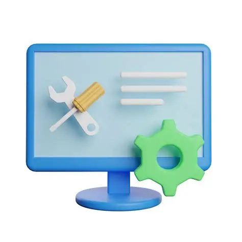

Soporte Técnico de Equipo de Cómputo
Inicio |
Servicios |
Equipos |
Contacto
Bienvenido a Nuestro Centro de Soporte
¡Hola! Te damos la bienvenida a nuestro portal de asistencia técnica. Nos dedicamos a ofrecer soluciones rápidas, eficientes y garantizadas para que tus equipos de cómputo funcionen en perfectas condiciones en todo momento.
Nuestros Servicios
- Mantenimiento Preventivo y Correctivo: Limpieza física de componentes internos y optimización del sistema operativo para evitar fallas.
- Eliminación de Virus y Malware: Limpieza profunda de amenazas informáticas, troyanos y spyware para proteger tu información.
- Instalación y Configuración de Software: Instalación de sistemas operativos, paquetería de oficina, antivirus y programas especializados.
- Diagnóstico y Reparación de Hardware: Cambio o reparación de piezas defectuosas como discos duros, memorias RAM, fuentes de poder y pantallas.
- Respaldo y Recuperación de Datos: Recuperación de archivos perdidos o borrados y creación de copias de seguridad de tus documentos importantes.
